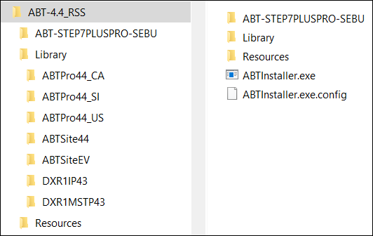

离线ABT安装程序安装包
完成以下步骤以在您的计算机上提取 ABT 站点和 ABT Pro 安装程序安装包及其库：
- The ABT_Installer.zip must be present on your machine.
- Unzip the ABT_Installer.zip file to extract its contents.
- Following is the extracted content from ABT_Installer.zip file:

- Double-click ABTInstaller.exe to launch the ABT Installer to install ABT Site and ABT Pro.
- The ABT Installer’s Welcome dialog box is launched. For more information about installing ABT Site and ABT Pro, see Installing ABT Site and ABT Pro topic.